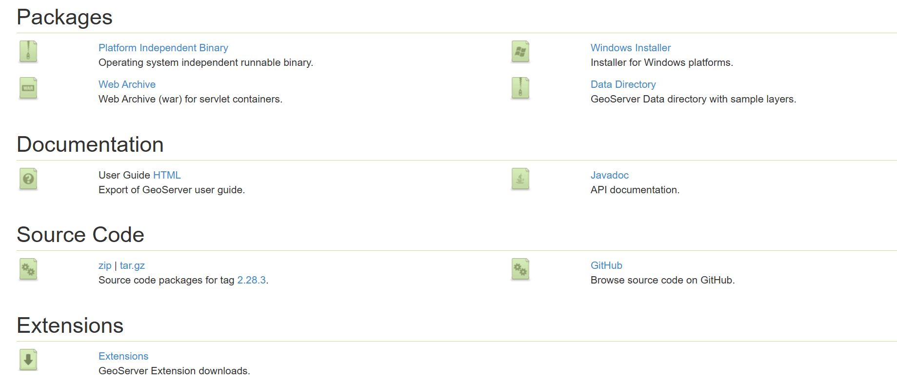

GeoServer 安装配置¶
安装GeoServer一定得看清相对应的Java版本，还要注意Java在环境变量里面的配置
1️.GeoServer 介绍¶
GeoServer 由 Open Source Geospatial Foundation (OSGeo) 社区维护，是全球使用最广泛的开源 GIS 服务器之一。它的核心特点包括：
- 开源免费：基于 LGPL 许可证，无需购买商业许可。
- 多数据支持：支持矢量数据（Shapefile、PostGIS、GeoJSON、KML、GML）、栅格数据（GeoTIFF、ImageMosaic）、数据库（PostGIS、Oracle Spatial、SQL Server）等。
- 标准化服务：支持 WMS、WFS、WCS、WMTS 等 OGC 标准，使地理数据跨平台访问无障碍。
- 丰富扩展插件：通过社区插件可支持更多格式和功能，如 GeoWebCache 缓存、SLD 样式编辑、事务性 WFS。
- Web 管理界面：提供易用的 Web UI 进行数据发布、服务管理和样式设计。
本机版本号： 2.28.3
依赖java环境： 老版本需要11以上，该版本推荐java17 LTS
2️.GeoServer 核心功能¶
数据发布¶
GeoServer 可以将各种 GIS 数据源发布为网络服务，核心服务类型包括：
- WMS（Web Map Service）：发布地图图像，支持多种投影和样式（SLD）。
- WFS（Web Feature Service）：发布矢量要素，允许客户端进行查询和编辑。
- WCS（Web Coverage Service）：发布栅格数据，支持原始数据下载。
- WMTS（Web Map Tile Service）：发布切片地图，提高地图渲染速度。
样式管理¶
GeoServer 支持 SLD（Styled Layer Descriptor） 样式规范，可以对地图图层进行丰富的样式设计，包括：
高性能与缓存¶
- GeoWebCache 集成：GeoServer 内置瓦片缓存，提高地图响应速度。
- 事务性 WFS-T：支持客户端对矢量数据进行增删改操作，同时保证数据一致性。
- 大数据支持：可连接 PostGIS、Oracle Spatial 等数据库，支持大规模数据查询。
3️.安装与配置¶
系统需求¶
- 操作系统：Windows、Linux、macOS 均可
- Java 环境：一般来说，Java 17 及以上
- Web 容器（可选）：Tomcat、Jetty，也可使用自带 Jetty 内嵌服务器
- 硬件建议：内存 ≥ 4GB，磁盘空间视数据量而定
安装步骤（联想拯救者y9000p，windows）¶
- 安装并配置java
GeoServer依赖 java 环境，根据官方文档，我下载的是GeoServer2.28.3版本 ，推荐使用的java版本是java17 LTS：
https://adoptium.net/
安装时勾选全部选项，这样会把其设置到系统环境，如下图所示：
- 下载 GeoServer 最新稳定版（.zip 或 .exe）：
https://geoserver.org/download/

可以看到多个形式，这里我们下载 Platform Independent Binary ，得到一个zip包。
- 解压或运行安装程序，选择安装路径。
我们自己建立一个文件夹如geoServer,把刚才的zip解压缩进去，由于我已经将java添加进了系统环境变量，所以无需该配置。 否则，我们需要在startup.bat的@echo off 下方插入一行set JAVA_HOME=D:\你的位置\java
-
启动 GeoServer：
-
Windows：点击
bin\进入运行startup.bat -
Linux/macOS：运行
./startup.sh
-
打开浏览器访问 GeoServer Web 界面：
http://localhost:8080/geoserver
默认用户名和密码：admin / geoserver
4️.发布数据示例¶
4.1 发布 Shapefile¶
- 在 GeoServer Web 界面登录 → Data → Stores → Add new Store → Shapefile
- 上传或指定 Shapefile 文件路径
- 配置坐标系（CRS）
- 保存并发布 Layer
- 配置样式（SLD）
- 通过 WMS URL 访问地图，例如：
http://localhost:8080/geoserver/wms?service=WMS&version=1.1.0&request=GetMap&layers=workspace:layername&styles=&bbox=...&width=800&height=600&srs=EPSG:4326&format=image/png